Web Design.
COVID-19 Statistics — turning raw data into interactive visualizations, live submissions and country-level recommendations.
Python · pandas · Matplotlib · Plotly · HTML · CSS · JavaScript · Firebase
From raw data to an interactive information system
I developed a COVID-19 statistics information system that turns a real-world dataset into readable charts, an interactive web interface, a live data-submission tool, and a country-based recommendation feature. The project brought together data cleaning, visualization, programming, user-interface design and testing.
My goal was to make public-health data easier to explore while meeting a defined set of basic and advanced coursework requirements. I also documented the complete project in a multi-page technical report covering research, planning, implementation and evaluation.
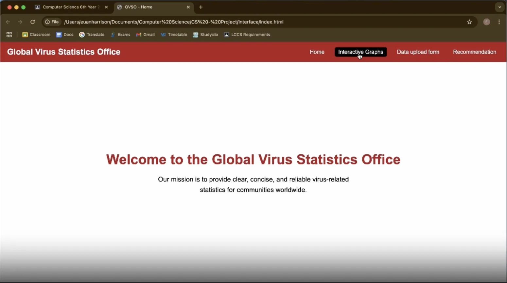
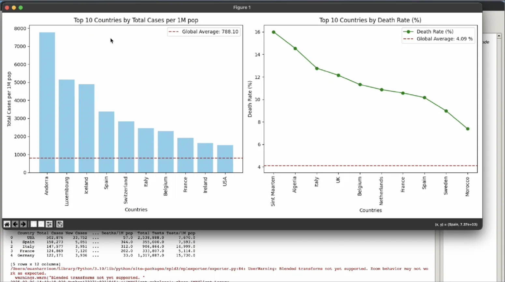
Investigation & dataset selection
I evaluated multiple data sources—including the Irish Central Statistics Office, Tableau, Kaggle and World Bank resources—before selecting the COVID-19 Worldometer dataset on Kaggle. It offered country-level statistics appropriate for visualization and comparison.
To understand effective communication of health data, I reviewed the WHO COVID-19 dashboard, the European Centre for Disease Prevention and Control, and Ireland’s COVID Tracker app. These examples helped guide the information architecture and presentation of the system.
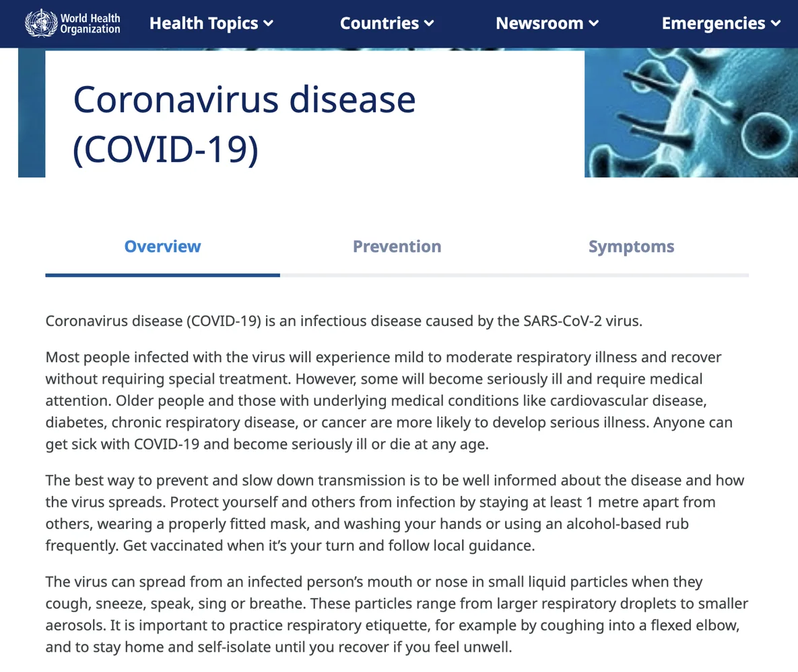
Requirements, planning & system design
I organized the project around three basic requirements—obtain and clean a dataset, produce visualizations, and display them in a web-based interface—and three advanced requirements: interactive graphs, collection and display of user-submitted data, and a data-driven recommendation feature.
Before implementation, I prepared a flowchart, a use-case diagram, and a Gantt chart to describe the workflow, user interactions and project schedule.
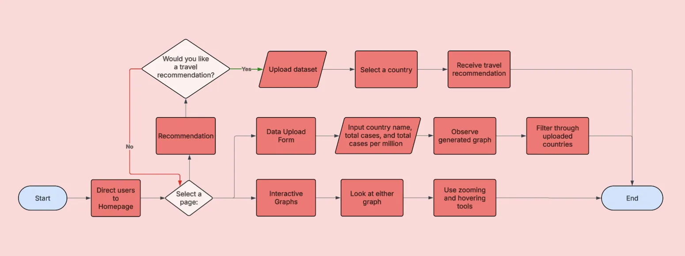
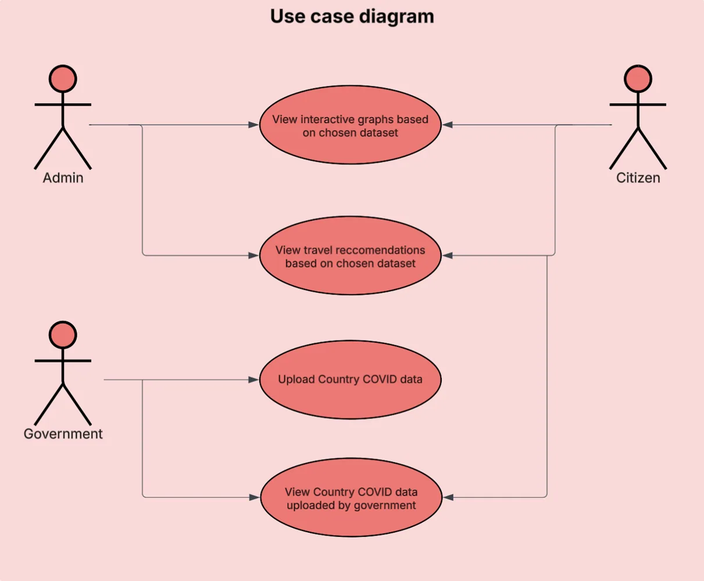
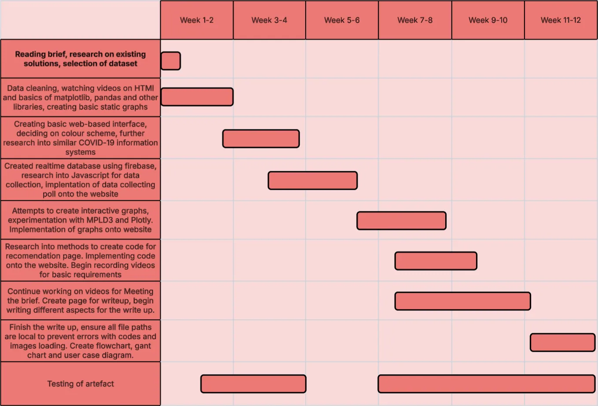
Python data processing & visualizations
Using Python and pandas, I cleaned the CSV dataset by checking for duplicated records and missing data, then saved a cleaned version for analysis. I initially built charts using Matplotlib, including a bar chart and trend visualization with axes, legends and clear labeling.
To give users more control over the data, I then used Plotly and pandas to generate interactive HTML-based charts with built-in hover and zoom functionality. These could be incorporated into the main information system.
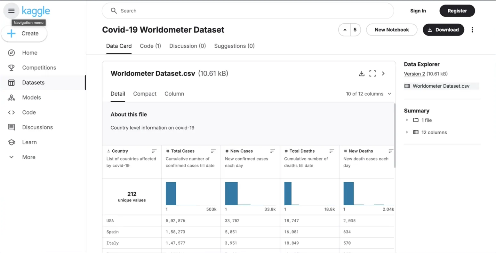
Web interface & interactive charts
I built the website using HTML, CSS and JavaScript, working in Atom for the front end and Thonny for Python development. The interface collected the graphs and supporting information in one accessible place and introduced interactive versions of the static visualizations.
The central technical decision was to switch from MPLD3 to Plotly after discovering browser-compatibility and responsive-layout problems. Plotly offered more reliable interaction across browsers and screen sizes, and improved the usability of the finished website.
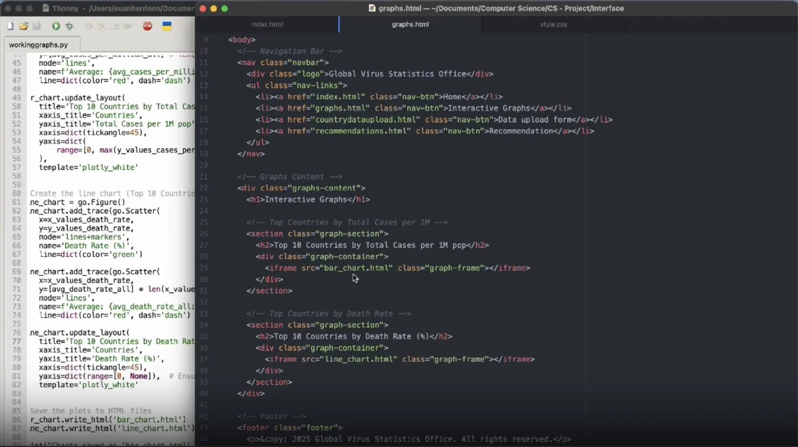
Live user submissions with Firebase
I implemented a form that captured three types of user data and connected it to a Firebase Realtime Database. Submitted records were stored centrally, retrieved through JavaScript, and displayed as a bar-chart visualization. The design allowed information to be entered from multiple devices rather than relying on local data alone.
In the evaluation, I identified a limitation: submitting the same country twice could create duplicate bars instead of aggregating cases. I proposed updating records for existing countries as a future enhancement.
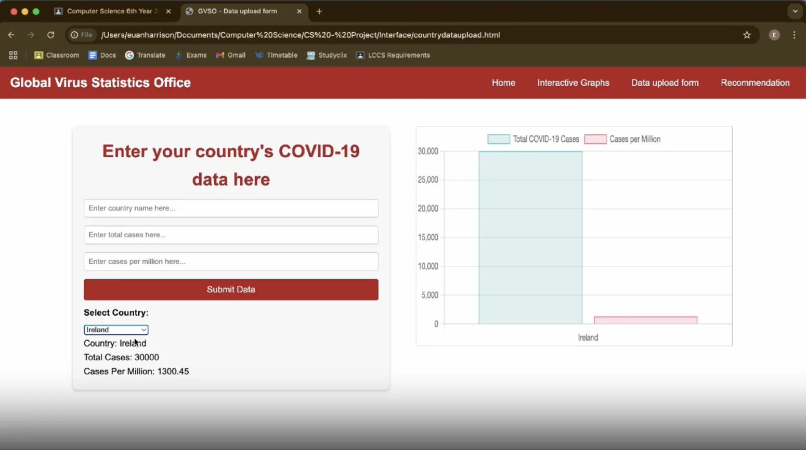
Country-specific recommendations
For the final advanced requirement, I created a separate travel-recommendation feature. A user uploads the COVID-19 CSV file, selects a country from a dropdown, and receives a recommendation based on its total cases per million population.
The JavaScript algorithm parses the uploaded CSV, locates the Country and Total Cases/1M pop fields, converts case totals to numbers, populates the country dropdown, and compares the chosen country’s value against the project’s 1,000-cases-per-million threshold. It also handles invalid files or missing data. This threshold was a coursework rule for demonstrating conditional logic, not current public-health travel advice.
The original implementation required users to upload the CSV manually because the browser could not freely access their local files. In a future version, I would host the dataset so the feature works without that extra step.
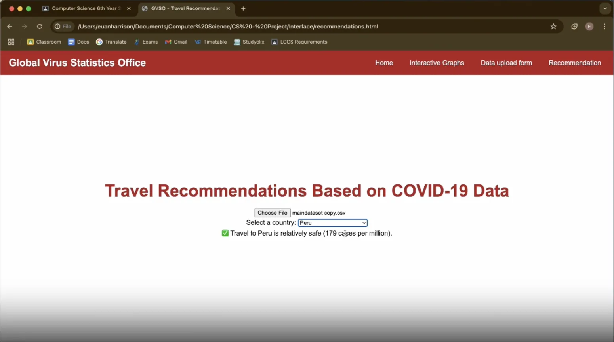
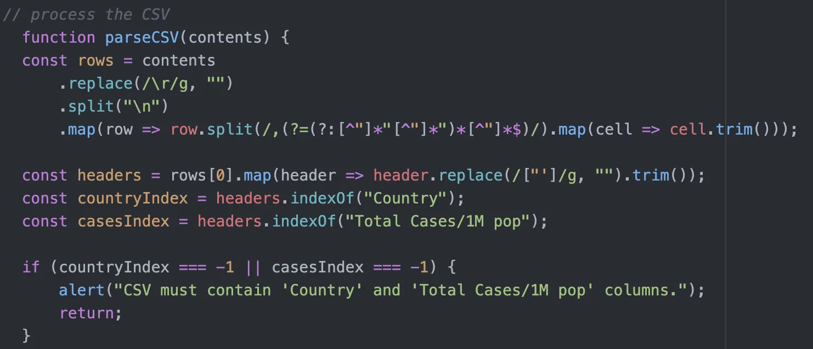
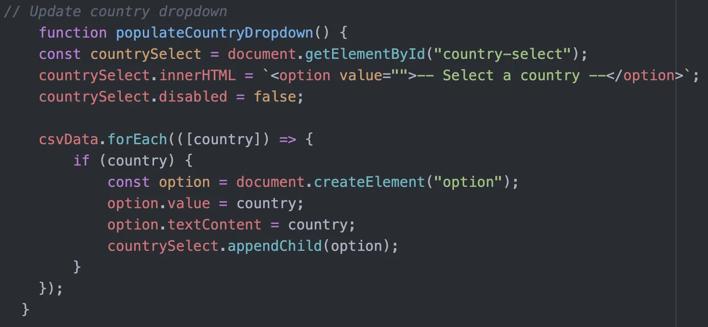
Testing, iteration & evaluation
I documented development progress and a structured test table. The report describes troubleshooting, including why I replaced MPLD3 with Plotly: inconsistent zoom and selection behavior, unreliable browser support, and weak resizing across devices.
The completed system combined static and interactive data visualizations, a website interface, Firebase-backed live submissions and a CSV-powered recommendation page. In my evaluation, I identified concrete opportunities for improving duplicate-record handling, avoiding manual dataset uploads and expanding the types of data accepted by the submission form.
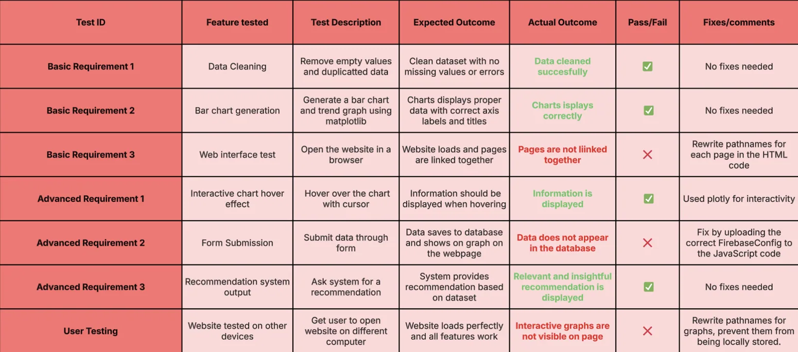
What I learned
This project gave me hands-on experience spanning data ingestion → data cleaning → analysis → visualization → web UI → storage → testing. More importantly, it taught me to evaluate competing tools, debug integrations and make design decisions based on reliability and usability rather than appearance alone.
The accompanying ZIP was the project report website, which documents the creation and evaluation of the COVID-19 system. Some screenshots show the working artefact; the source package provided here does not contain every separate application file or its Firebase configuration, so this portfolio page presents the documented work rather than claiming to host a live, complete deployment.